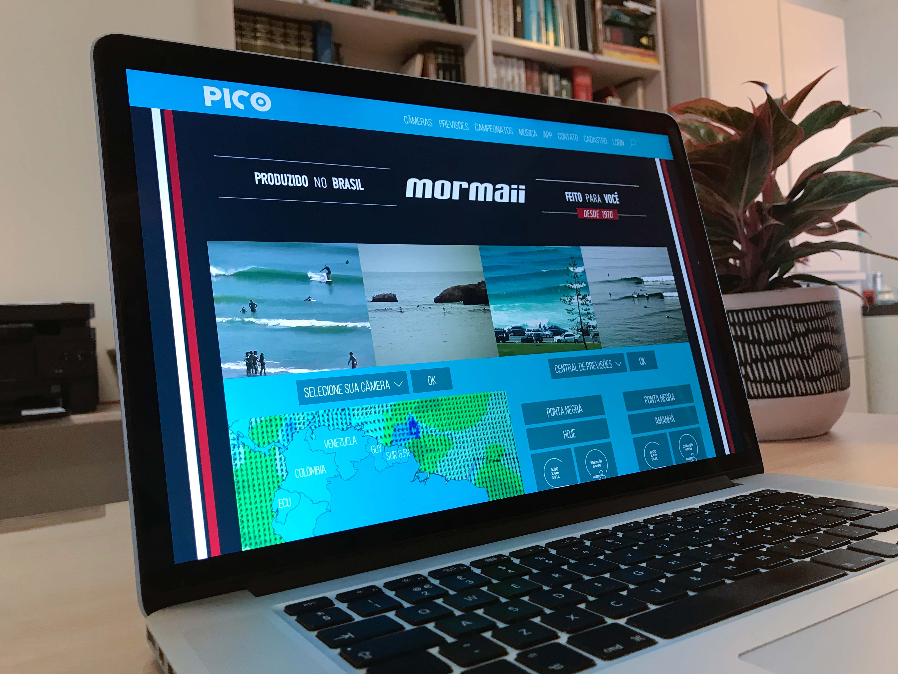

Setembro 2017
Carreira na startup Surfmappers
Nesta empresa, iniciei como designer gráfica e, ao longo de mais de quatro anos, evolui, alcançando a liderança do time de marketing. Durante esse período, pude me aprimorar como líder, direcionando e acompanhando a produção do meu setor e também dialogando com a equipe de desenvolvimento de software. Destaco a experiencia da apresentação de pitch da empresa no Investor's Day do SEBRAE/RN, produzido pela Darwin Aceleradora de Startups, com a qual consegui atrair o interesse de investidores anjo.
Fevereiro 2017
Criação do app Pico

Ao longo dos anos vivendo em Natal (RN), me aproximei muito do universo do surf e, como aprendiz apaixonada pelo esporte, sentia as dores e delícias desse lifestyle. Tive então a ideia de criar um app para monitorar os picos de surf, que foi admitido na Inova Metrópole, incubadora de empresas do Instituto Metrópole Digital. Todo projeto, desde a concepção da ideia e design de UI/UX até o desenvolvimento do modelo de negócio e apresentação do pitch para banca de jurados da incubadora foi feito por mim.